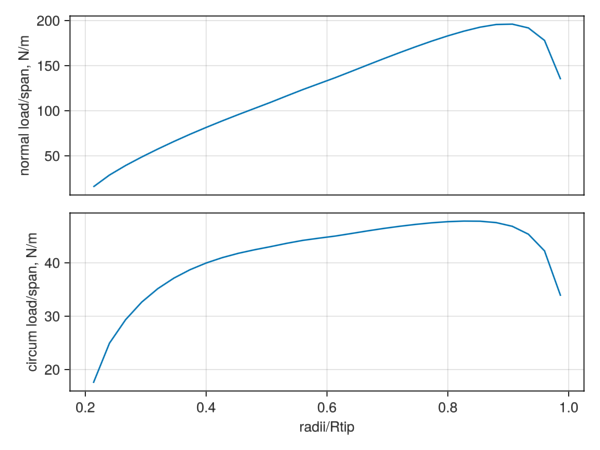
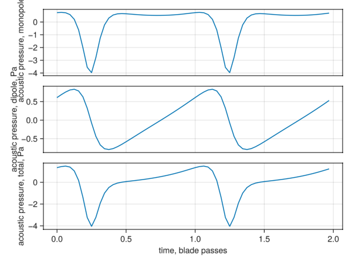

Compact Formulation 1A CCBlade.jl Example
AcousticAnalogies.jl contains routines that take in types defined by CCBlade.jl, a blade element momentum theory (BEMT) code and construct the types used by AcousticAnalogies.jl for acoustic predictions. This makes it simple to go from a BEMT aerodynamic prediction of a propeller or rotor to an acoustic prediction.
First step is to load up CCBlade.jl.
using CCBlade: parsefile, viterna, AlphaAF, SkinFriction, PrandtlGlauert, DuSeligEggers, PrandtlTipHub, Rotor, Section, OperatingPoint, solve, linearliftcoeffThen we'll define some parameters we'll need to create the CCBlade.jl types. First some atmospheric properties:
gam = 1.4
R = 287.058 # J/(kg*K)
rho = 1.226 # kg/m^3
c0 = 340.0 # m/s
mu = 0.1780e-4 # kg/(m*s)And some blade geometry parameters:
num_blades = 3
num_radial = 30
precone = 0.0 # rad
Rtip = 0.5*24*0.0254 # blade radius, m
Rhub = 0.2*Rtip # hub radius, m
r_ = range(Rhub, Rtip, length=num_radial+1) # blade element interfaces
radii = 0.5.*(r_[2:end] .+ r_[1:end-1]) # blade element centers, m
c = 1.5*0.0254 # (constant) chord, m
chord = fill(c, num_radial) # chord, m
D = 2*Rtip # blade diameter, m
P = 16*0.0254 # propeller pitch, m
twist = @. atan(P/(pi*D*radii/Rtip)) # twist, rad
area_over_chord_squared = 0.08217849116518001 # Cross-sectional area per chord^2 for NACA0012.We also need airfoil lift and drag coefficients as a function of angle of attack. CCBlade.jl has routines for interpolating and correcting airfoil lift and drag data. Here we're starting with NACA0012 airfoil data from airfoiltools.com:
af_fname = joinpath(@__DIR__, "assets", "xf-n0012-il-500000.dat")
info, Re, Mach, alpha, cl, cd = parsefile(af_fname, false)
# Extend the angle of attack with the Viterna method.
cr75 = c/Rtip
(alpha, cl, cd) = viterna(alpha, cl, cd, cr75)
af = AlphaAF(alpha, cl, cd, info, Re, Mach)
# Reynolds number correction. The 0.6 factor seems to match the NACA 0012
# drag data from airfoiltools.com.
reynolds = SkinFriction(Re, 0.6)
# Mach number correction.
mach = PrandtlGlauert()
# Rotational stall delay correction. Need some parameters from the CL curve.
m, alpha0 = linearliftcoeff(af, 1.0, 1.0) # dummy values for Re and Mach
# Create the Du Selig and Eggers correction.
rotation = DuSeligEggers(1.0, 1.0, 1.0, m, alpha0)
# The usual hub and tip loss correction.
tip = PrandtlTipHub()Finally, the freestream velocity and the rotor rotation rate:
v = 0.11*c0 # m/s
omega = 7100 * 2*pi/60 # rad/s
pitch = 0.0 # radNow we have enough information to create the CCBlade.jl structs we'll need.
rotor = Rotor(Rhub, Rtip, num_blades; precone=precone, turbine=false, mach=mach, re=reynolds, rotation=rotation, tip=tip)
sections = Section.(radii, chord, twist, Ref(af))
ops = OperatingPoint.(v, omega.*radii, rho, pitch, mu, c0)And we can use CCBlade.jl to solve the BEMT equations.
outs = solve.(Ref(rotor), sections, ops)And then make some plots.
using GLMakie
fig1 = Figure()
ax1_1 = fig1[1, 1] = Axis(fig1, xlabel="radii/Rtip", ylabel="normal load/span, N/m")
ax1_2 = fig1[2, 1] = Axis(fig1, xlabel="radii/Rtip", ylabel="circum load/span, N/m")
lines!(ax1_1, radii./Rtip, getproperty.(outs, :Np))
lines!(ax1_2, radii./Rtip, getproperty.(outs, :Tp))
hidexdecorations!(ax1_1, grid=false)
save("ccblade_example-ccblade_loads.png", fig1)
Now we can use the CCBlade.jl structs to create AcousticAnalogies.jl source elements. The key function is source_elements_ccblade:
AcousticAnalogies.source_elements_ccblade — Functionsource_elements_ccblade(rotor::CCBlade.Rotor, sections::Vector{CCBlade.Section}, ops::Vector{CCBlade.OperatingPoint}, outputs::Vector{CCBlade.Outputs}, area_per_chord2::Vector{AbstractFloat}, period, num_src_times)Construct and return an array of CompactSourceElement objects from CCBlade structs.
Arguments
rotor: CCBlade rotor object.precone).sections:Vectorof CCBlade section object.ops:Vectorof CCBlade operating point.outputs::Vectorof CCBlade output objects.area_per_chord2: cross-sectional area divided by the chord squared of the element at each CCBlade.section. Should be a Vector{AbstractFloat}, same length assections,ops,outputs.period: length of the source time over which the returned source elements will evaluated.num_src_times: number of source times.
So let's try that:
using AcousticAnalogies: source_elements_ccblade, ConstVelocityAcousticObserver, f1a, combine, pressure_monopole, pressure_dipole
bpp = 2*pi/omega/num_blades # blade passing period
ses = source_elements_ccblade(rotor, sections, ops, outs, [area_over_chord_squared], 4*bpp, 64)Now we can use the source elements to perform an acoustic prediction, after we decide on an acoustic observer location.
using AcousticMetrics
# Sideline microphone location in meters.
x_obs = [0.0, 2.3033, 2.6842]
v_obs = [v, 0.0, 0.0]
obs = ConstVelocityAcousticObserver(0.0, x_obs, v_obs)
apth = f1a.(ses, Ref(obs))
apth_total = combine(apth, 2*bpp, 64)And finally plot the acoustic pressure time history.
fig2 = Figure()
ax2_1 = fig2[1, 1] = Axis(fig2, xlabel="time, blade passes", ylabel="acoustic pressure, monopole, Pa")
ax2_2 = fig2[2, 1] = Axis(fig2, xlabel="time, blade passes", ylabel="acoustic pressure, dipole, Pa")
ax2_3 = fig2[3, 1] = Axis(fig2, xlabel="time, blade passes", ylabel="acoustic pressure, total, Pa")
t = AcousticMetrics.time(apth_total)
t_nondim = (t .- t[1])./bpp
lines!(ax2_1, t_nondim, pressure_monopole(apth_total))
lines!(ax2_2, t_nondim, pressure_dipole(apth_total))
lines!(ax2_3, t_nondim, AcousticMetrics.pressure(apth_total))
hidexdecorations!(ax2_1, grid=false)
hidexdecorations!(ax2_2, grid=false)
save("ccblade_example-apth.png", fig2)